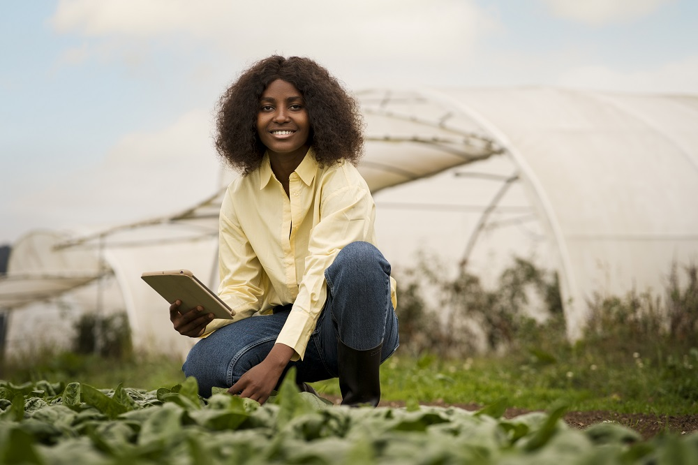
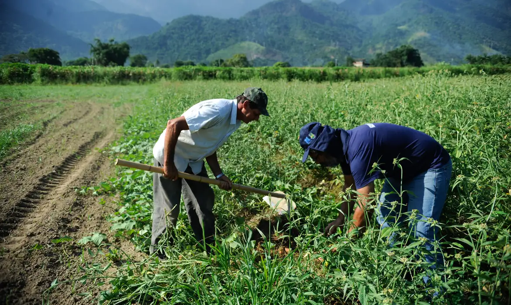
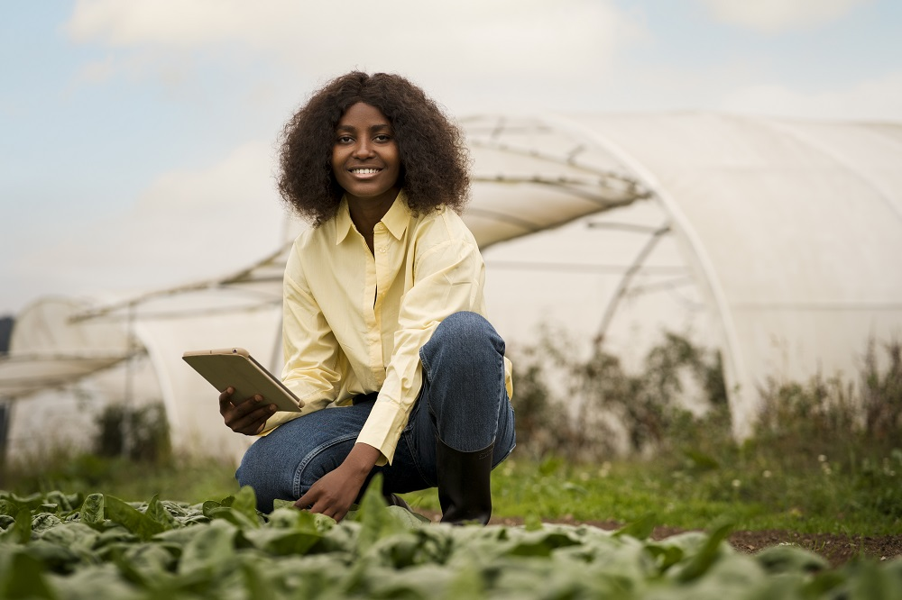
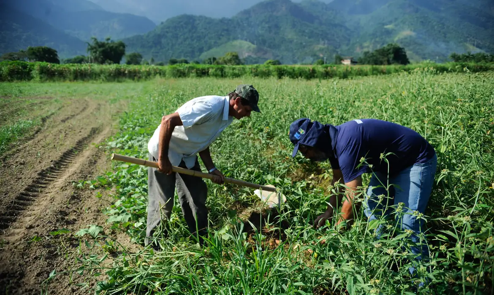
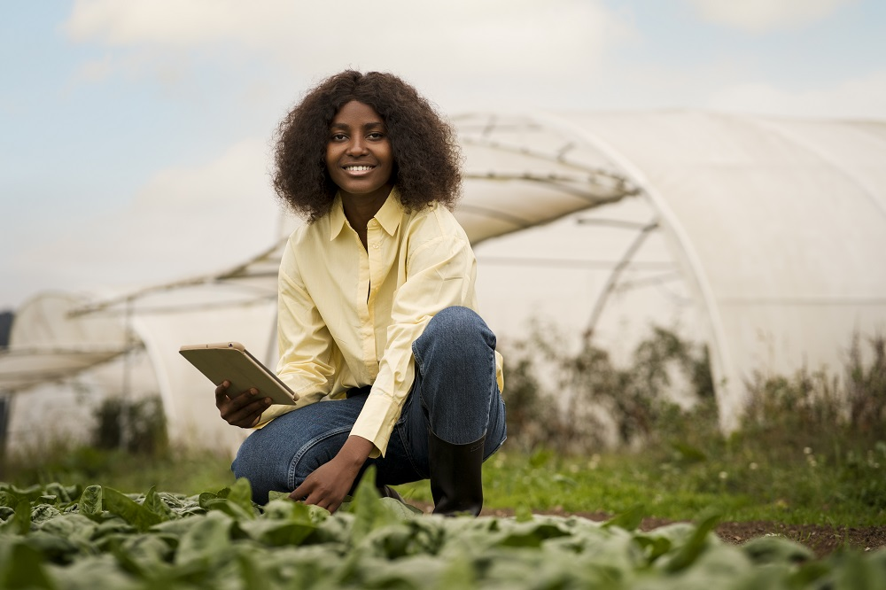
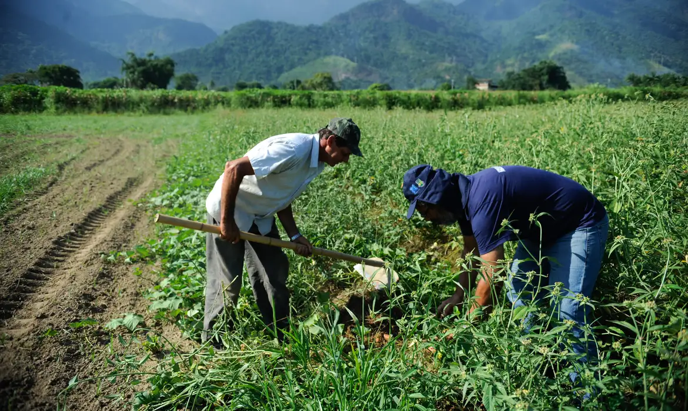

Bem-vindo ao nosso projeto!
Este site foi criado pelos alunos para o Concurso Agrinho, com o objetivo de celebrar a união entre o campo e a cidade.
Galeria de Imagens
 





Do campo à cidade, colhendo oportunidades e construindo pontes de aprendizado
Este site foi criado pelos alunos para o Concurso Agrinho, com o objetivo de celebrar a união entre o campo e a cidade.

